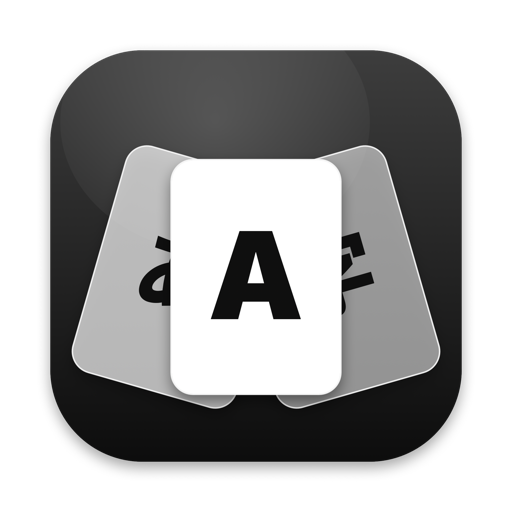

LEX-01
英文・日本語・中文 單字卡 + 抽卡。第一次打開要用 Google 帳號登入，並貼上你自己的免費 Gemini 金鑰；進度存在你自己的 Google 雲端硬碟，換手機或電腦都能接著學。
打開 LEX-01 · Open用 Safari 加入主畫面
- 用 Safari 打開這個網頁，按「打開 LEX-01」
- 按下方的「分享」按鈕（方框加向上箭頭）
- 選「加入主畫面」→「加入」
之後從主畫面的 LEX-01 圖示打開，就像一般 App（全螢幕、可離線）。
用 Chrome 安裝
- 用 Chrome 打開這個網頁
- 按上面的「安裝成 App」；沒看到的話，按右上角「⋮」→「安裝應用程式」或「加到主畫面」
安裝後會出現在主畫面和 App 清單裡。
用 Chrome 或 Edge 安裝
- 用 Chrome 或 Edge 打開這個網頁
- 按上面的「安裝成 App」，或網址列右邊的「安裝」小圖示（螢幕加箭頭）
安裝後會有自己的視窗和開始功能表圖示。
用 Chrome 或 Edge 安裝（建議）
每次打開都會自動檢查新版本，有更新就自己換成最新版（不會打斷你正在做的題目）。- 用 Chrome 或 Edge 打開這個網頁
- 按上面的「安裝成 App」，或網址列右邊的「安裝」小圖示
會出現在「應用程式」和 Launchpad。也可以直接在 Safari 的分頁裡用。
舊的「Mac 版」安裝檔不能登入 Google，請改用這個方式。
舊的「Mac 版」安裝檔不能登入 Google，請改用這個方式。
版本 —